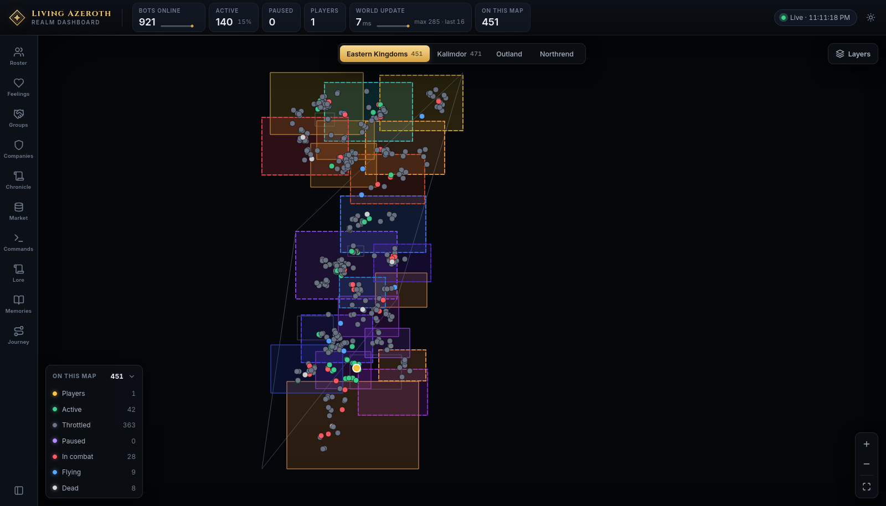
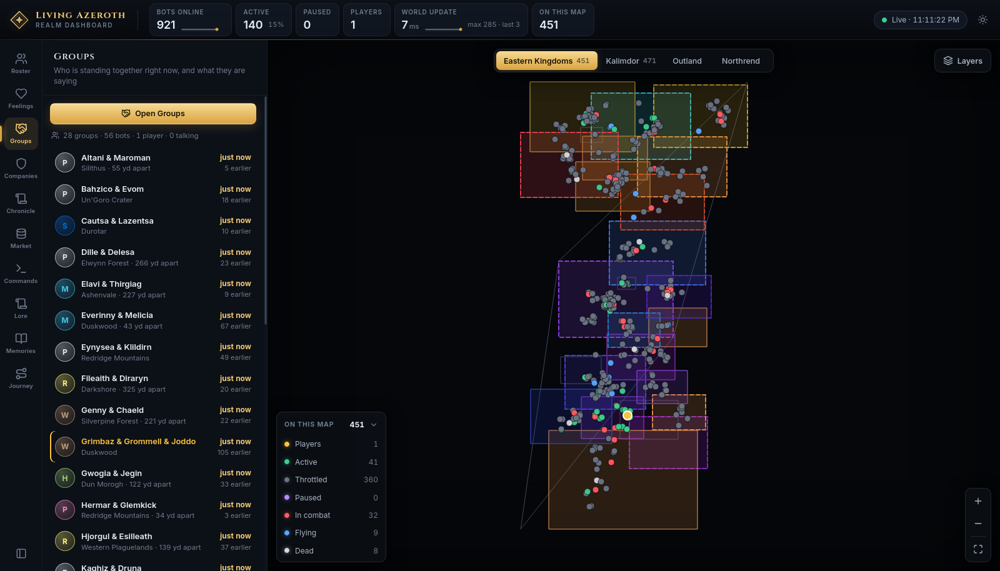
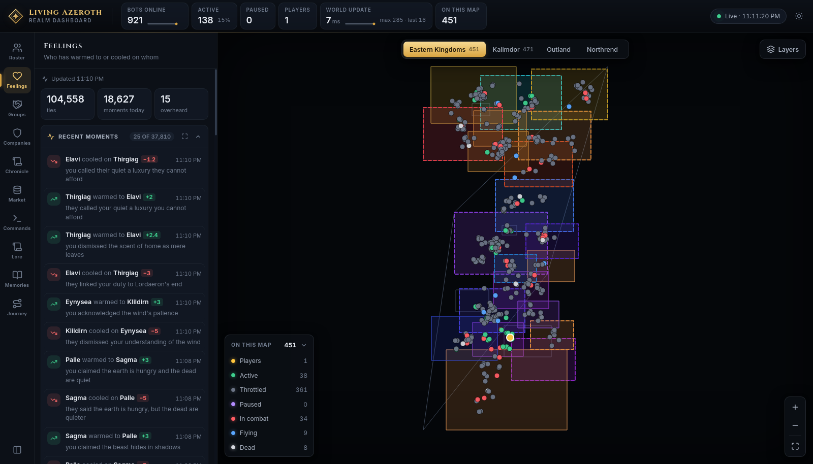
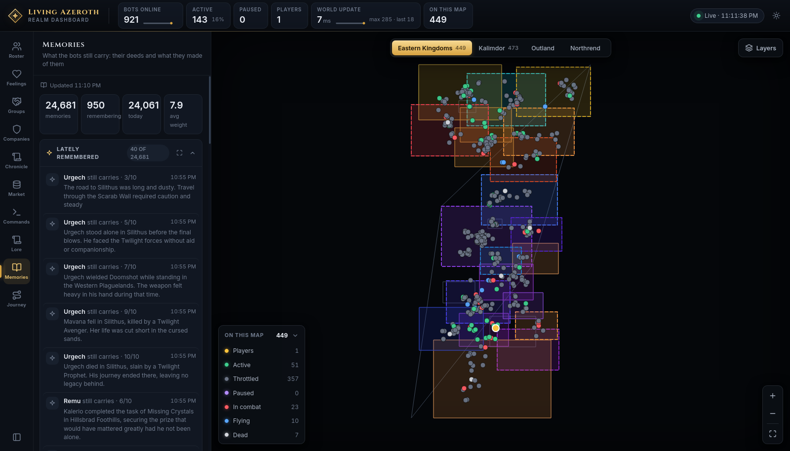
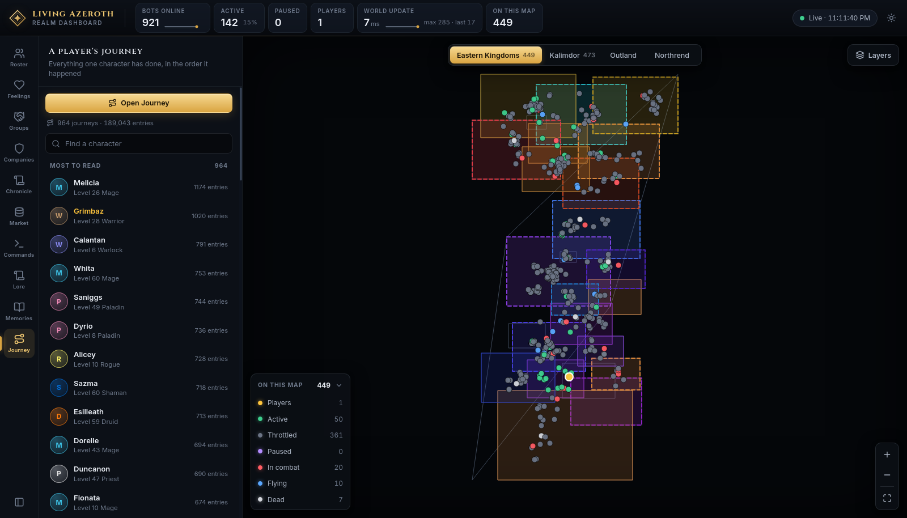
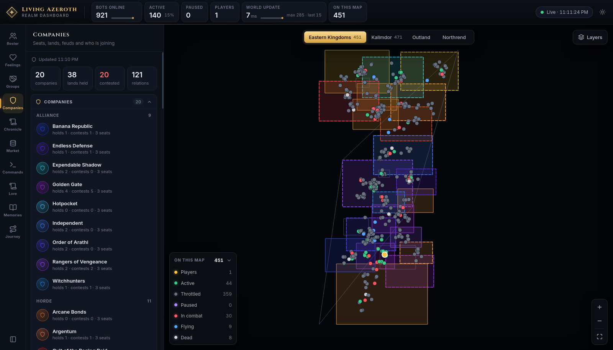
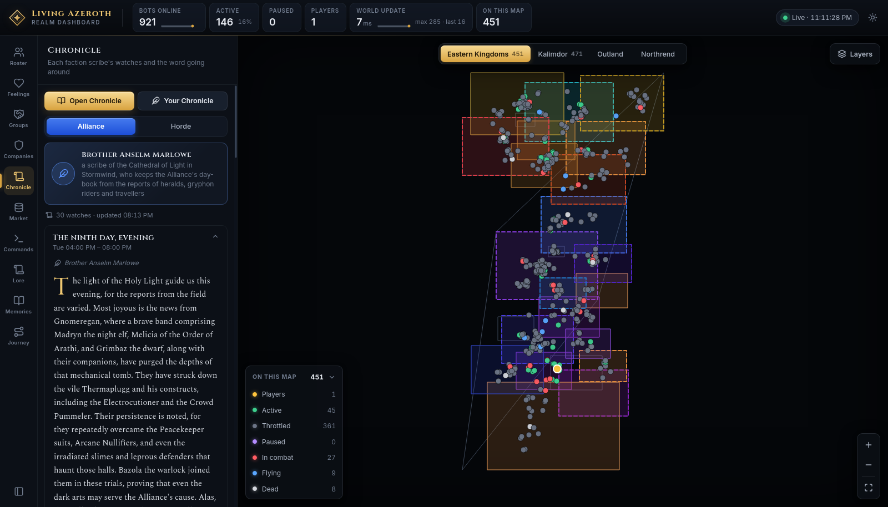
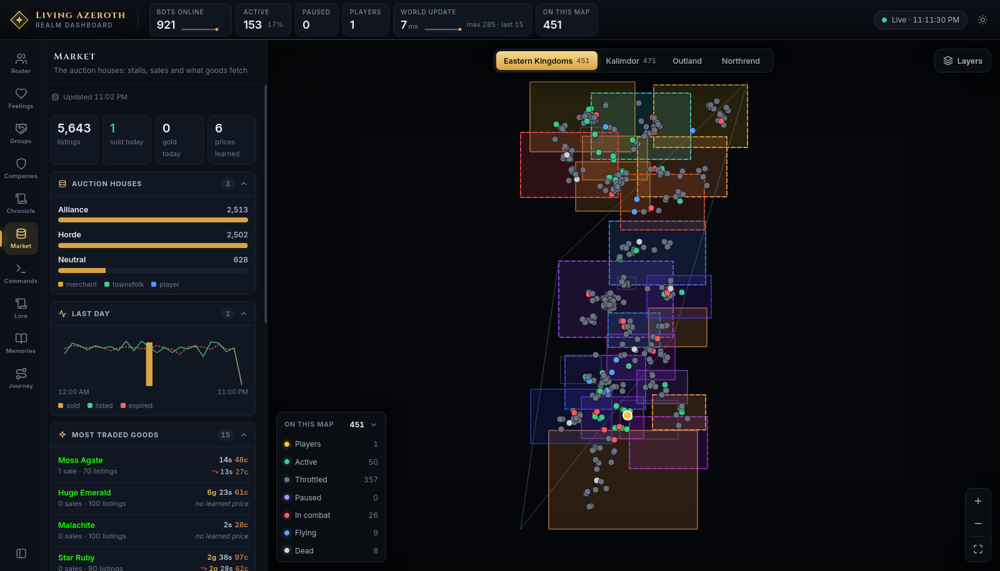
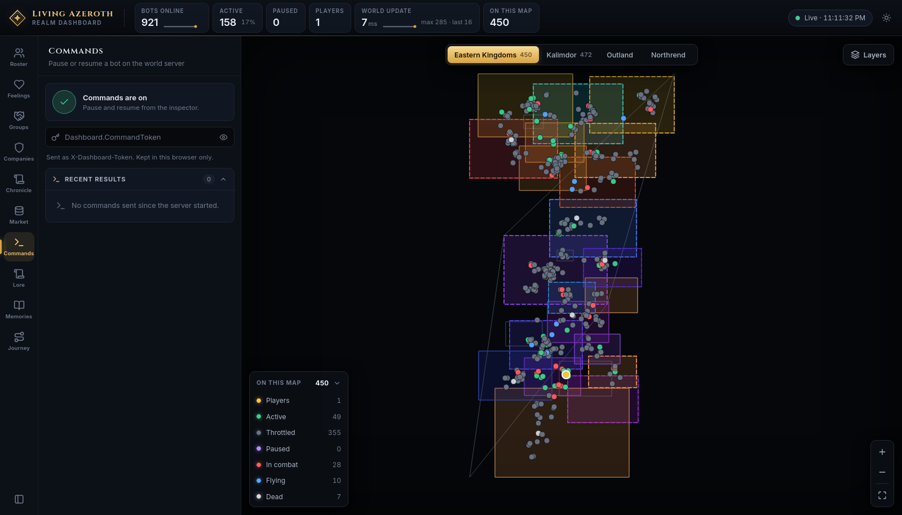
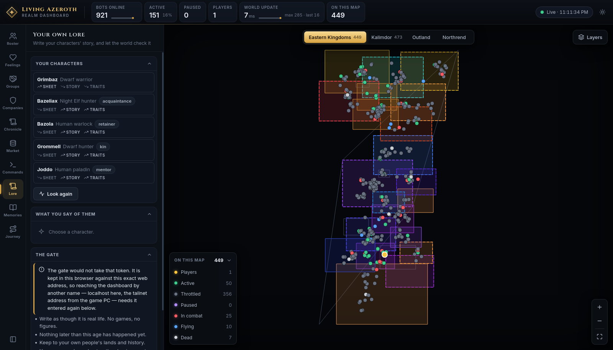

Ten panels sit on the rail. Each answers a different question about the realm. They are
grouped here by what they are for; the rail itself lists them in its own fixed order.
Two words worth pinning down. A company is a guild — a standing organisation with seats,
land and rivalries. A group is a party — a handful of characters standing together right now.
Who is in the world
Roster
Everyone in the world right now
The census, and the fastest way to find one person. Each row gives a character's name, level, class and
where they are standing, with a coloured dot for what they are doing.

The Roster opens on Notable — the handful of characters worth attention out of nine
hundred.
Controls
Find by name — the search box. / jumps into it from anywhere.
Notable — real players, paused bots, and anyone inside an instance. The default.
On this map — everyone on the continent you are looking at.
In combat — everyone fighting at this instant.
Dead — everyone awaiting a resurrection.
Everyone — all nine hundred-odd, alphabetically.
Each chip carries a live count, so the filter row doubles as a summary of the realm. Lists cap at 150
rows and say how many more there are.
Clicking a row opens that character in the inspector, switches the map to their continent, and
pans to them.
Groups
Who is standing together right now, and what they are saying
Characters find each other and travel together without being told to. This panel lists every group
currently formed, who is in it, where they are, how long they have been together and how much they have
said.

Each row is a group: members, where they are standing, how long they have been together, and
how much talk there has been since they joined up.
The line above the list totals it — how many groups, bots, real players, and how many are talking. A row
reading 266 yd apart means the group has drifted; apart means its members are in different
zones.
Clicking a row opens that group full screen, on its own map, with its whole conversation.
Open Groups opens the wall of every group at once.
What they feel and keep
Feelings
Who has warmed to or cooled on whom
Characters form opinions by talking, by overhearing others, and by what happens to them. Every shift is
recorded with the reason for it.

Recent moments, each with the reason underneath and how far the feeling moved.
Section
What is in it
Recent moments
X warmed to Y or X cooled on Y, how much, and why. The timestamp's tooltip says whether it came from chat, from being overheard, or from an event.
Overheard
Whole conversations. Open one for the exchange as spoken, then the feelings it caused in whoever was listening.
Warmest ties
The strongest attachments in the world, each with a phrase describing it and how many moments built it.
Coldest ties
The same, for the people who cannot stand each other.
A heading reading 25 of 14,494 means you are seeing the top of a larger pile; the expand button
on it opens the whole list. Every name is a link.
Memories
What the bots still carry: their deeds and what they made of them
Not everything that happens is worth remembering. What is, gets written down in the character's own
words and weighed out of ten.

Lately remembered, newest first, each weighed. Below it, who carries the most.
The counts give the total, how many characters carry anything, how many formed today, and the average
weight. A memory weighed 10/10 was a defining event; a 3/10 was an errand.
To read one character's memories instead of the world's, select them and open the Memories tab in
the inspector.
Journey
Everything one character has done, in the order it happened
One character's whole record, assembled from the ledger — every kill, quest, level, item, journey,
conversation, feeling and memory, in order.

Everyone who has a journey written, with how many entries it runs to.
Unlike every other panel, this one lists characters who are offline too. Search by name, or click
a row to open that journey full screen. The journeys are rebuilt every ten minutes.
The world around them
Companies
Seats, lands, feuds and who is joining
Companies are the realm's guilds. They hold territory, keep seats, court new members and fall out with
one another.

Companies split by faction, each showing what it holds, what it contests and how many seats
it keeps.
Companies — every company under Alliance and Horde headings.
Candidacies — who is trying to join whom, and how far along: noticed, spoken for, offered a place, sworn in. Sponsors and opponents are named.
Fallen companies — collapsed by default. Companies that broke apart, went quiet, or left remnants.
Recent incidents — land Claimed, Taken, Held, Contested, or two companies hunting the same prey.
Clicking a company opens it in the inspector and lights its territory up on the map.
Chronicle
Each faction scribe's watches and the word going around
Each faction has a scribe who writes up the world's events in period prose, one watch at a time, from
what actually happened. Rumours travel outward from where they started and distort as they go.

The scribe, then one card per watch. Opening a card shows the prose and the rumours attached
to it.
Alliance / Horde — whose scribe you are reading. The factions see the world differently.
Open Chronicle — the full-screen reader, laid out as a newspaper.
Your Chronicle — an edition covering only what your own characters took part in.
Inside a watch, Word going around collects the rumours. Labels like Carried on, Further
still and Far and wide say how many hands a story has passed through — the further it has
travelled, the less reliable it is.
Market
The auction houses: stalls, sales and what goods fetch
Merchants stock the auction houses, characters list what they loot, and the market works out what things
are worth.

Listings, sales and learned prices, with a day's trading charted across the middle.
Auction houses — one bar per house, split by seller: merchant, townsfolk or player.
Last day — twenty-four hours of sold, listed and expired. Hover a column for that hour.
Most traded goods — item names in quality colours, the price the market has learned, and which way it moved.
Recent sales — what changed hands, for how much, between whom.
The market file is rewritten every ten minutes; if it falls behind, a stale badge appears.
What you can change
Eight of the ten panels only report. These two act on the world.
Commands
Pause or resume a bot on the world server
The only panel that needs a password.

The panel says at the top whether commands are available at all.
Pausing freezes a character where they stand. They still defend themselves if attacked, and the pause
ends when they log out or the server restarts — it holds someone still, it does not remove them.
Paste the server's command token into the token field. It is kept in your browser only, and leaves it
only as a header on the command itself.
Select a character, from the map or the roster.
Press Pause in the inspector. It becomes Resume.
Pausing without a token brings you to this panel and asks for one. Every result the server sends back is
listed under Recent results.
Where the token comes from. It is the Dashboard.CommandToken setting on the
server. If it was never set, the panel reads Commands are off and the pause buttons do nothing.
Lore
Write your characters' story, and let the world check it
Where you write your own characters into the world. They can be given a backstory, a turn of speech and
a relationship to each other, and the world checks what you wrote before accepting it.

Your characters, each showing whether they have a sheet, a story and
traits yet, and the bond tying them to your main.
Name your main — the character you play as yourself. The rest become their alts.
Pick a character. What already stands for them appears below.
Bring them into the world. Choose what is between them and your main — only ties that pair
could genuinely have are offered — plus a turn of speech and a few words of your own. Surprise me
fills all three in as editable suggestions.
Write it, read what came back, then Bring them in. Nothing is stored until you do.
Under Words that must survive you can name things the writing must not lose — a cousin, a debt, a
home town. If the result drops them, it is written again without them.
The gate
Anything you write is checked against four rules:
Write as though it is real life. No games, no figures.
Nothing later than this age has happened yet.
Keep to your own people's lands and history.
Your own words are kept — the shaping must not lose what you said.
The verdict comes back as This cannot stand in the world, Worth considering, or As the
world would tell it. This panel needs its own token, separate from the command token, entered at the
bottom under The gate.